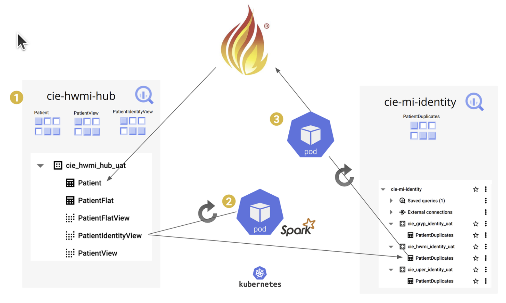

0.1.0 - cie-build
0.1.0 - cie-build
ciefhirig - Local Development build (v0.1.0) built by the FHIR (HL7® FHIR® Standard) Build Tools. See the Directory of published versions
| Official URL: https://directory.mi-cie.org/cie/fhir/ig/ImplementationGuide/cie.fhir.us | Version: 0.1.0 | |||
| Draft as of 2025-07-21 | Computable Name: ciefhirig | |||
The Community Information Exchange (CIE) Hub for Social Determinants of Health (SDOH) is a collaborative, standards-based platform designed to facilitate seamless data sharing across healthcare providers, community-based organizations, and social service agencies. Built on HL7® FHIR® (Fast Healthcare Interoperability Resources), the CIE Hub enables secure, interoperable exchange of SDOH data—such as housing, food security, transportation, and employment—to support whole-person care. By leveraging FHIR's flexible and extensible data model, the CIE Hub promotes real-time coordination, reduces fragmentation, and empowers communities to address social needs as integral components of health and well-being.

IG © 2025+ Brighstreet Group. Package cie.fhir.us#0.1.0 based on FHIR 4.0.1. Generated 2025-07-21
Links: Table of Contents |
QA Report
Version History |
 |
Propose a change
|
Propose a change